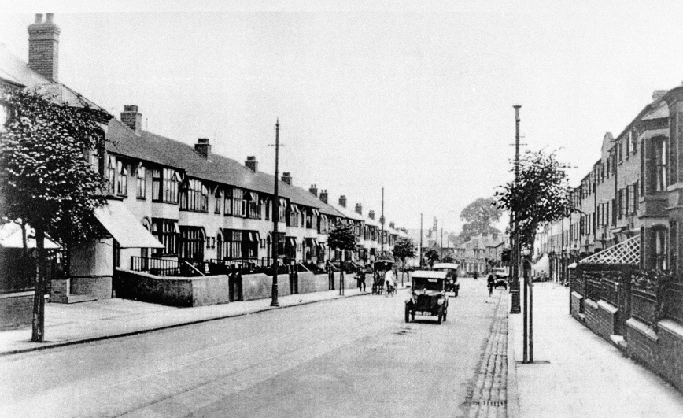

Albany Road
Albany Road was started in mid-January 1898 and should, by the terms of the contract, have been completed by 10 July. In fact it was only completed on 16 September 1898. Officially opened a few months later on 1 December 1898, it was named after the Duchess of Albany following her visit to St. Thomas's Church in November 1898. Its construction was in order to pump prime new life into Earlsdon which that had suffered from its earliest days from poor communication with Coventry. There were no direct roads and the shortest route was via a footpath (Earlsdon Jetty) that was the basis for Albany Road. The City Council had started to organise a road to Earlsdon in 1890 but was delayed through problems negotiating with local land owners. The new road made the creation of a tram service possible. This started in March 1905 which further increased the interest in Earlsdon as a suburb. Developers needed no encouragement to feed a building boom in the area during the years leading up to the First World War.  This view of Albany Road is taken part way down from the centre of Earlsdon, looking towards the Butts. Trams are still passing up and down this road but other motor traffic is now beginning to be a more common sight. The Edwardian terraces have been joined by later additions from the 1920s on the left-hand side of the road, filling the few gaps that are left. The blinds on shop fronts and the shadows suggest sunny weather at midday. This busy road displays first signs of the moving and parked motor traffic that blights modern day Earlsdon, but a couple of bicycles and a horse drawn van still remind us of the relatively peaceful time of less than a decade earlier. |